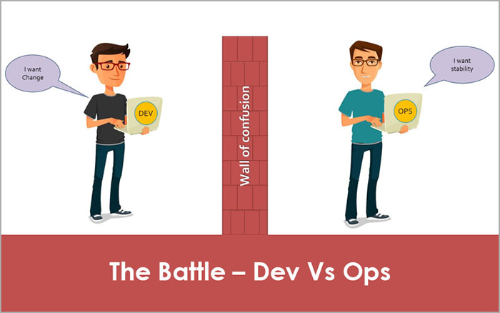
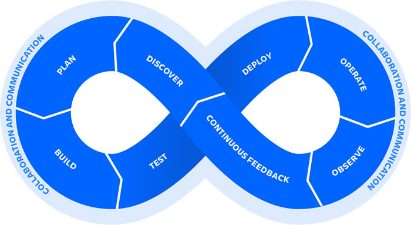
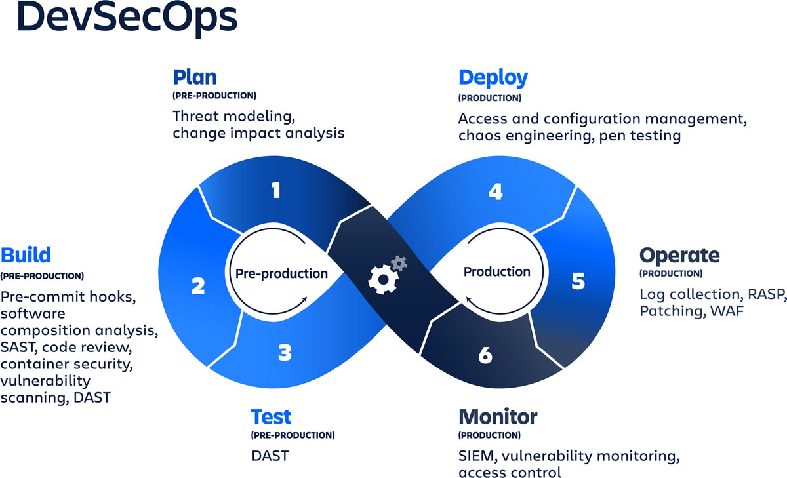

首页 > 编程笔记
DevOps到底是什么？
DevOps 到底是什么意思，有一段来自 Atlassian 对 DevOps 的定义：
我们知道 DevOps 一词是 Development 和 Operations 的组合。DevOps 大概起源于 2007 年，主要是为了解决传统开发与运维间沟通协作不畅的问题。
传统的开发与运维分别属于不同的部门，两者有着不同的思维模式，彼此缺乏深入的沟通与了解。开发人员想让代码尽快的发布，运维人员想让系统尽可能的稳定，这种模式无法快速的交付需求，所以 DevOps 这种新的工作模式，文化变革应运而生。
下面简单看一下，每个阶段都是做什么的：
下图演示了一个 DevOps 流水线大概长什么样，可以看到其包含代码提交后的构建、测试及部署等阶段。但业界没有一个标准的 DevOps 流水线，每个组织会根据自己的场景及技术栈来构建适合自己的流水线。
图3：DevOps 流水线示意图
下图演示了如何在 DevOps 生命周期中注入安全。
综上，本文首先介绍了 DevOps 的概念、生命周期及实践的原则，然后对 DevOps 流水线与 DevSecOps 作了解释。以期阅读完本文的朋友对什么是 DevOps 能有一个基本的了解。
DevOps is a set of practices, tools, and a cultural philosophy that automate and integrate the processes between software development and IT teams. It emphasizes team empowerment, cross-team communication and collaboration, and technology automation.
翻译一下，意思是：DevOps 是实践、工具和文化理念的集合，可将软件开发和 IT 团队之间的流程进行自动化与集成。它强调团队赋能，跨团队沟通协作以及技术自动化。
我们知道 DevOps 一词是 Development 和 Operations 的组合。DevOps 大概起源于 2007 年，主要是为了解决传统开发与运维间沟通协作不畅的问题。
传统的开发与运维分别属于不同的部门，两者有着不同的思维模式，彼此缺乏深入的沟通与了解。开发人员想让代码尽快的发布，运维人员想让系统尽可能的稳定，这种模式无法快速的交付需求，所以 DevOps 这种新的工作模式，文化变革应运而生。

图1：开发和运维之间的撕逼
图1：开发和运维之间的撕逼
1. DevOps 生命周期
下图展示了 DevOps 生命周期的各个阶段，可以看到 DevOps 的生命周期大概由 8 个阶段组成，左侧是开发部分，右边是运维部分，是一个无限循环。

图2：DevOps 生命周期的 8 个阶段
图2：DevOps 生命周期的 8 个阶段
下面简单看一下，每个阶段都是做什么的：
1) 发现（Discover）
着手前的准备工作，团队开展头脑风暴等活动探索及明确要做的事情及其优先级。2) 计划（Plan）
计划阶段，采用敏捷等方法将需求拆分为更易于快速交付的工作。3) 构建（Build）
对代码进行编译构建。4) 测试（Test）
正式部署到生产环境前，采用自动化测试来确保变更的准确性。5) 部署（Deploy）
负责以自动化的方式将功能部署到生产环境。6) 运维（Operate）
负责 IT 基础设施的运行和维护工作。7) 观测（Observe）
通过监控及告警来快速发现并解决各种功能或性能问题。8) 持续反馈（Continuous feedback）
回顾当前版本并搜集客户反馈以发现不足，以期在下次发布做出改进。2. DevOps 五原则
要充分发挥 DevOps 的潜力，团队需要遵循如下五个原则：1) 协作（Collaboration）
协作是 DevOps 的前提，开发与运维团队合并为一个共享与协作的职能团队来提供更快更好的交付。2) 自动化（Automation）
DevOps 的一个必要实践是将软件生命周期中尽可能多的阶段进行自动化。这样即可以在更短的时间内响应客户的反馈。3) 持续改进（Continuous Improvement）
持续改进已成为敏捷开发与精益制造的重要部分。这是一种专注于实验、最大化地降低成本与提升效率的实践。其与持续交付也有关联性，DevOps 持续推送更新，从而提升软件迭代的效率。4) 以客户为中心的行动（Customer-centric action）
DevOps 通过使用与最终用户简短的反馈环来开发以用户需求为中心的产品或服务。这种以客户为中心的实践或行动包括通过实时监控与快速部署来快速搜集与响应用户的反馈。5) 以终为始（Create with the end in mind）
DevOps 团队应对产品的创建到实现有一个整体的了解，从而更深入的了解产品与理解需求，从而交付真正解决客户问题的产品或服务。3. DevOps 流水线
DevOps 流水线是一组自动化的流程和工具，允许开发和运维人员协作来将代码构建并部署到生产环境。下图演示了一个 DevOps 流水线大概长什么样，可以看到其包含代码提交后的构建、测试及部署等阶段。但业界没有一个标准的 DevOps 流水线，每个组织会根据自己的场景及技术栈来构建适合自己的流水线。
图3：DevOps 流水线示意图
4. DevSecOps
DevSecOps 是一个将安全性集成到持续集成、持续交付和持续部署流水线中的实践。下图演示了如何在 DevOps 生命周期中注入安全。

图4：在 DevOps 生命周期中注入安全
图4：在 DevOps 生命周期中注入安全
1) 计划阶段（Plan）
可以通过威胁建模等方法来识别软件可能存在的安全漏洞。2) 构建阶段（Build）
可以通过使用静态应用安全测试（Static Application Security Testing，SAST）软件（诸如 SonarQube）来扫描代码可能存在的漏洞。3) 测试阶段（Test）
可以通过动态应用安全测试（Dynamic Application Security Testing，DAST）软件来测试是否存在诸如 OWASP Top 10 等列出的安全漏洞。4) 部署阶段（Deploy）
部署阶段需要检查基础设施及运行环境的配置是否安全，包括网络防火墙、密钥数据等。一些流行的配置管理工具包括 Ansible、Puppet、HashiCorp Terraform 和 Chef 等。5) 运维阶段（Operate）
通过使用 Web 应用防火墙（Web Application Firewall，WAF）等提供额外安全保障。综上，本文首先介绍了 DevOps 的概念、生命周期及实践的原则，然后对 DevOps 流水线与 DevSecOps 作了解释。以期阅读完本文的朋友对什么是 DevOps 能有一个基本的了解。
关注公众号「站长严长生」，在手机上阅读所有教程，随时随地都能学习。内含一款搜索神器，免费下载全网书籍和视频。

微信扫码关注公众号